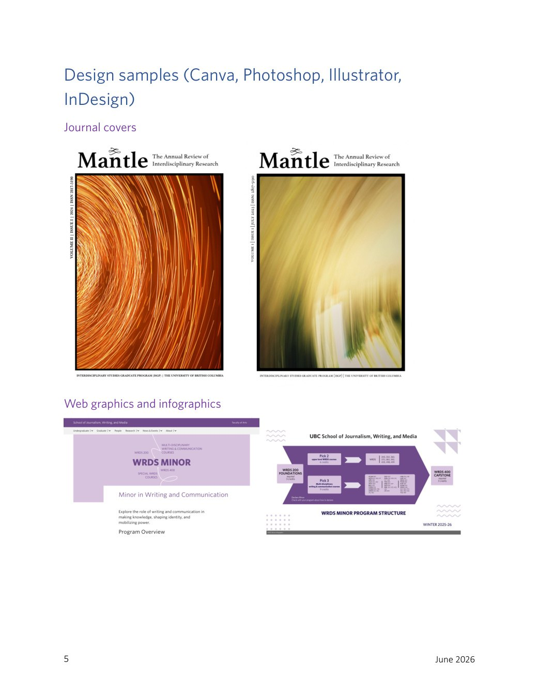
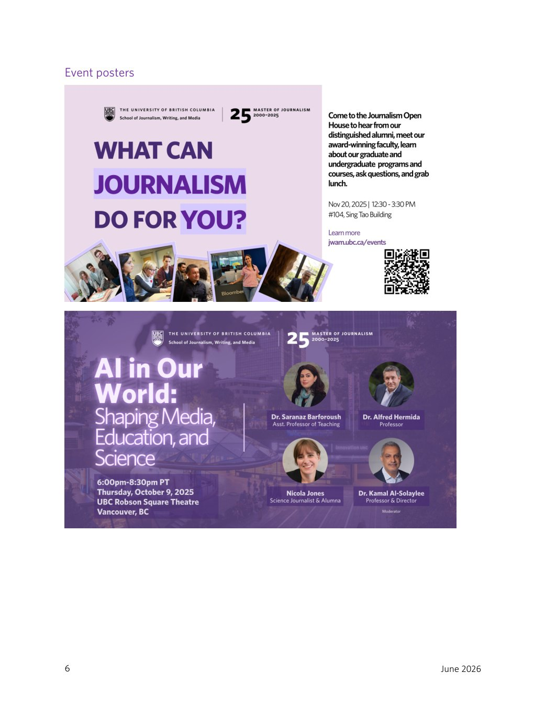
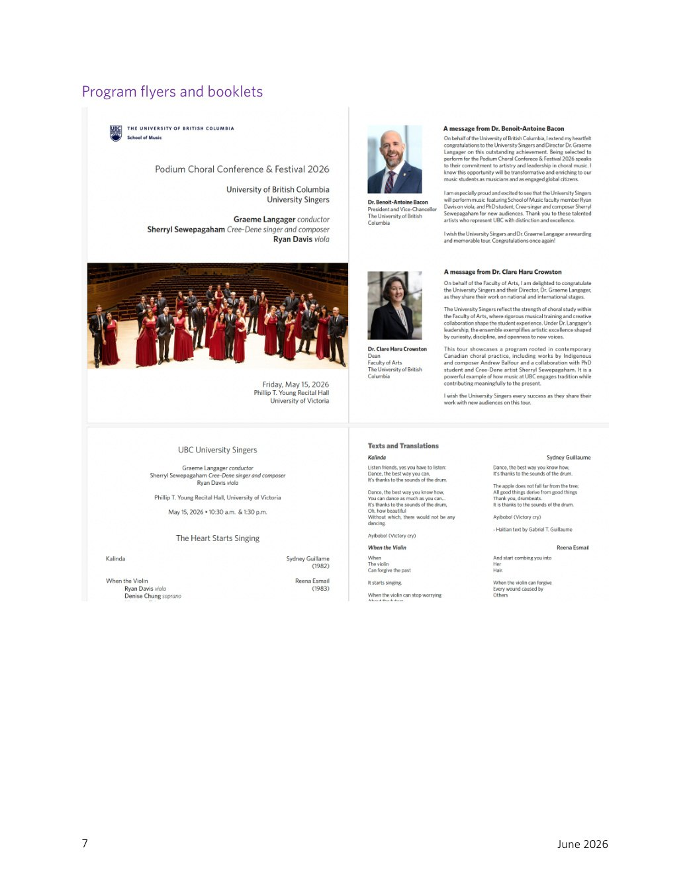
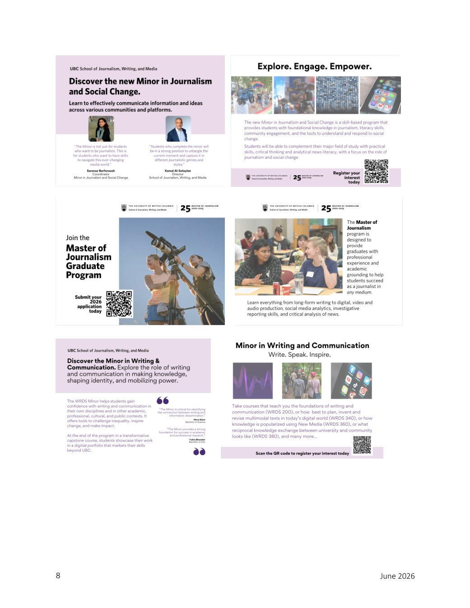
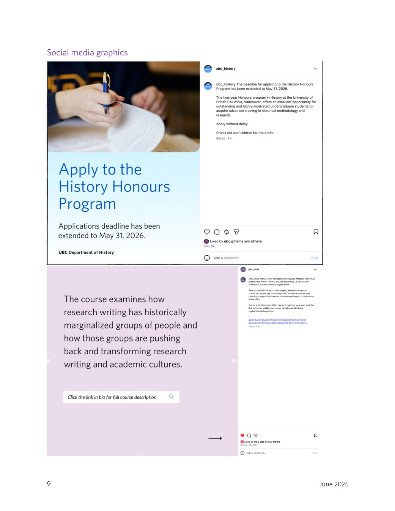
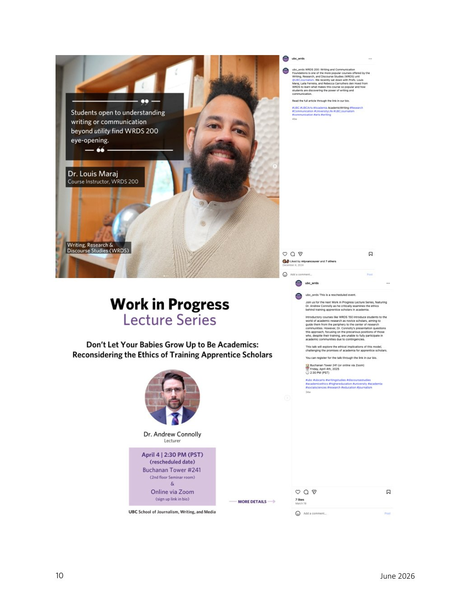
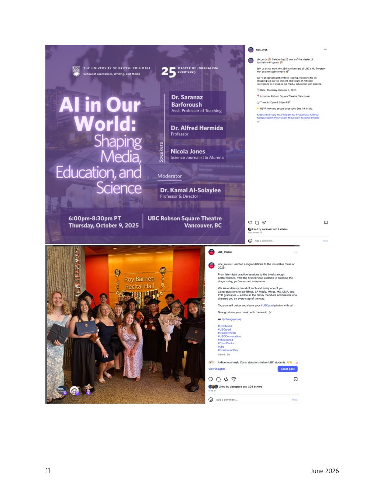

Journal + Web
Journal covers, web graphics and infographics
Mantle journal covers, WRDS Minor page graphic and WRDS Minor Program Structure infographic.
Design Portfolio
Selected design work across event promotion, social media, recruitment campaigns, program booklets, journal covers, web graphics and infographics.
Design Practice
My design work supports communications goals: audience awareness, event attendance, recruitment, public engagement, institutional storytelling and clear navigation through complex information.
Selected examples include event posters, program booklets, social media graphics, recruitment assets, journal covers, web graphics and infographics produced with Canva, Photoshop, Illustrator and InDesign.
Featured Design Project
The JWAM 25th Anniversary poster was already in the site assets and is now shown directly on this page.

assets/img/projects/jwam-25-poster.png.Selected Design Examples
These composites are included as a first visual pass. They can later be replaced with individual high-resolution source files.

Journal + Web
Mantle journal covers, WRDS Minor page graphic and WRDS Minor Program Structure infographic.

Event Posters
Poster examples for graduate recruitment and public-facing anniversary programming.

Print + Program
Program booklet and event materials for a formal music performance setting.

Recruitment
Campaign-style assets for Journalism and Social Change, Master of Journalism, and Writing and Communication.

Social Media
Instagram-ready graphics and captions supporting application deadlines and course awareness.

Social Media
Faculty quote card and lecture-series promotion adapted for social media formats.

Social + Events
Event campaign graphic and celebration post demonstrating adaptation across unit audiences and content types.
Tools & Capabilities